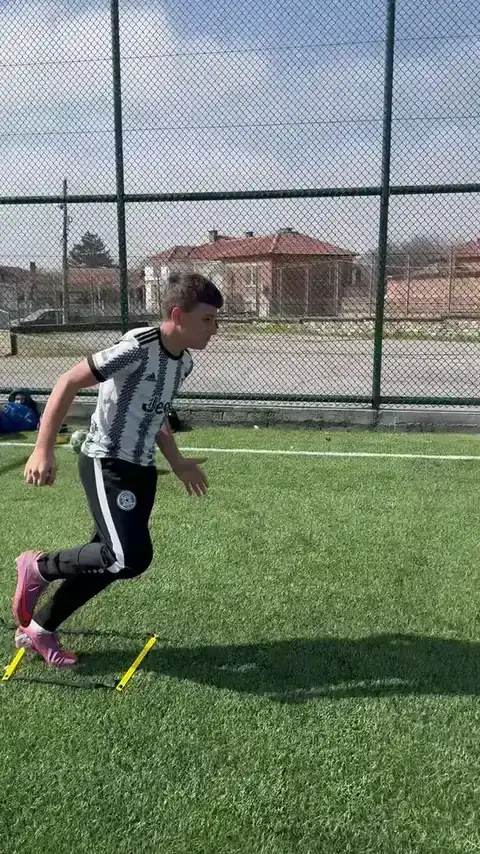
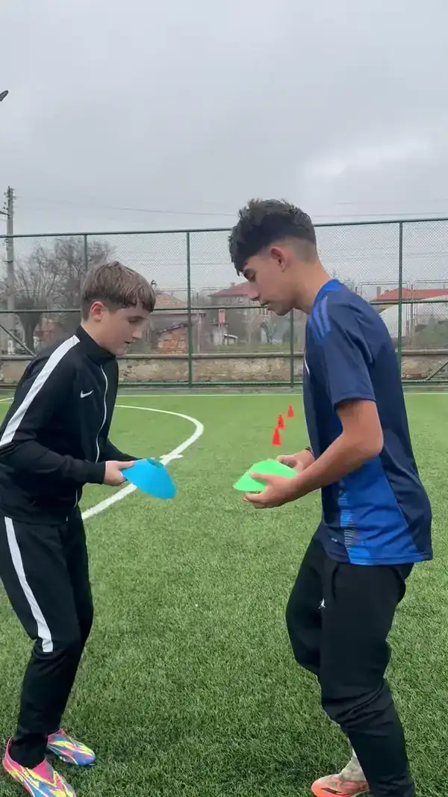

Лицето зад бранда
Създадено от човек, който знае какво значи да гониш футболна мечта.
Become Pro стои зад реален треньор, реален опит и ясна мисия: да помогне на футболистите да тренират по-структурирано, по-умно и с повече увереност.
Индивидуално футболно развитие с Йордан Желев
За амбициозни футболисти на 10–24 г., които искат да тренират с ясна цел и да пренасят наученото в мача.
Тренирай индивидуално с мен или избери готова онлайн програма според целите си.
Бивш футболист с дебют в Първа лига на 16 г. и опит в националния отбор на България U15.


Лицето зад бранда
Become Pro стои зад реален треньор, реален опит и ясна мисия: да помогне на футболистите да тренират по-структурирано, по-умно и с повече увереност.
Реални продукти
Това не са случайни упражнения. Това са конкретни футболни продукти с фокус, структура и ясна цел за развитие.
Онлайн програма за самостоятелна работа или индивидуална тренировка с лична обратна връзка.
Път към продукта
Ако търсиш готова структура и можеш да работиш самостоятелно - избери онлайн програма. Ако искаш персонален подход, обратна връзка и работа върху конкретни детайли - запази индивидуална тренировка.
За играчи, които искат ясна структура, готов план и възможност да тренират самостоятелно.
Избери програмаЗа играчи, които искат лична обратна връзка, анализ и работа върху конкретни проблеми.
Запиши се от тукЗащо работи
Когато играчът има ясна следваща стъпка, шансът да напредне е много по-голям. Become Pro превръща тренировката в система: фокус, повторения, корекция и приложение в игра.
Можеш да започнеш с онлайн програма за самостоятелна работа или да запазиш индивидуална тренировка, ако имаш нужда от лична корекция и анализ.
Виж програмитеВсяка тренировка има конкретна тема и цел.
Играчът знае какво да прави и защо го прави.
Упражненията се пренасят към реални игрови ситуации.
Започни целенасочено
Избери онлайн програма или запази индивидуална тренировка и започни да работиш целенасочено върху играта си.